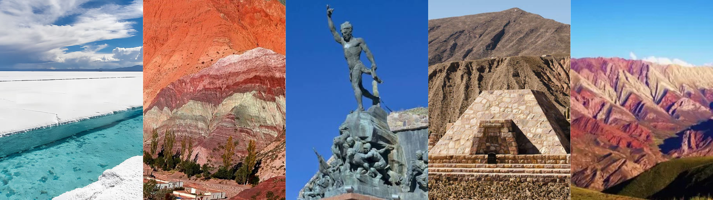
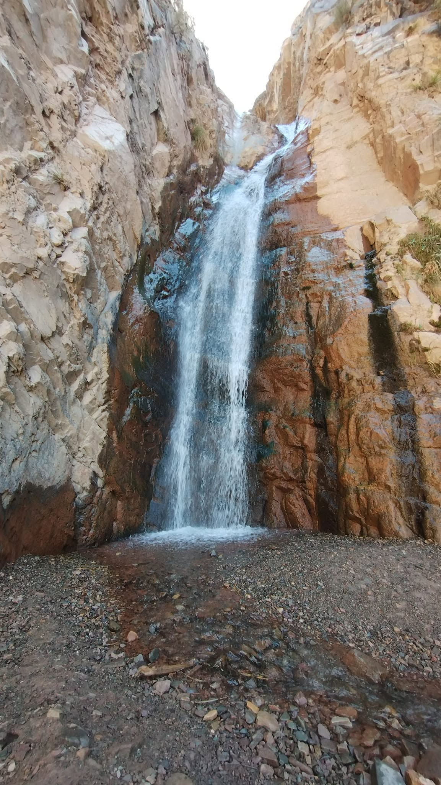
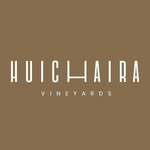
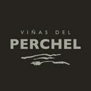

Salinas Grandes
A 92 km de Tilcara. Accediendo por Purmamarca.Más info
Conoce el norte argentino


Humahuaca, Jujuy
Cochinoca, Jujuy
Tilcara, Jujuy

Quebrada de Humahuaca
Aquí encontrará información sobre lugares de interes para conocer, museos, gastronomia, paseos y más.
A 92 km de Tilcara. Accediendo por Purmamarca.Más info
A 30 min al sur de Tilcara Más info
Cruzando el puente de hierro Más info

A 2 horas al norte de Tilcara Más info

Recorre gran parte de la quebrada. Desde Volcán hasta Tilcara Más info

Se encuentra ubicado en la calle Rivadavia 352, de la ciudad de Tilcara, provincia de Jujuy. Más info

Ubicado frente a la Plaza en el centro de Tilcara. Más info

Ubicado en esquina Belgrano y Bolivar. Más info

Ubicado en esquina Belgrano y Bolivar. Más info


Ubicado en calle Lavalle 486. Más info

Ubicado en esquina Belgrano y Bolivar. Más info


Se encuentra ubicado en la calle Rivadavia 352, de la ciudad de Tilcara, provincia de Jujuy. Más info

Ubicado frente a la Plaza en el centro de Tilcara. Más info
Ubicado en esquina Belgrano y Bolivar. Más info